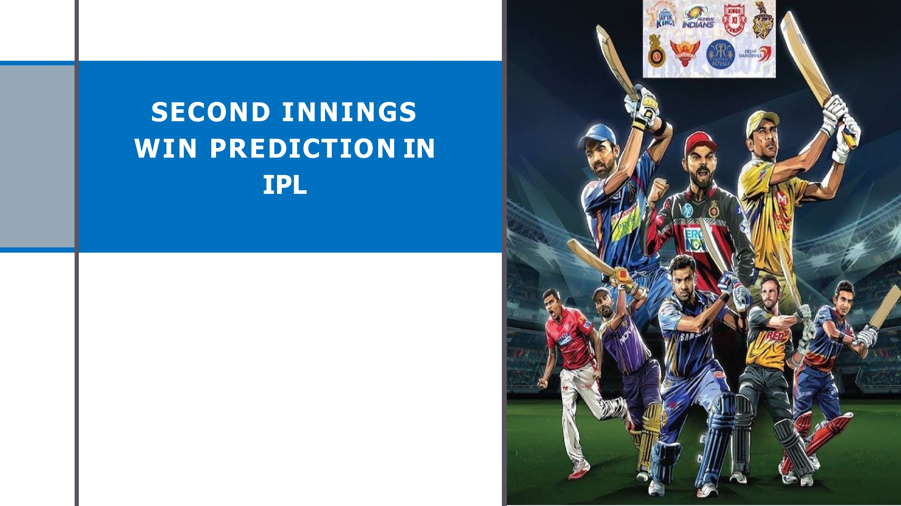
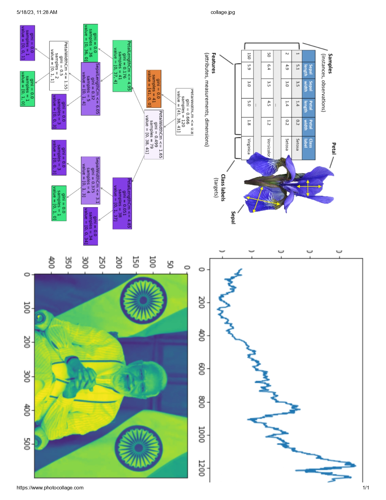
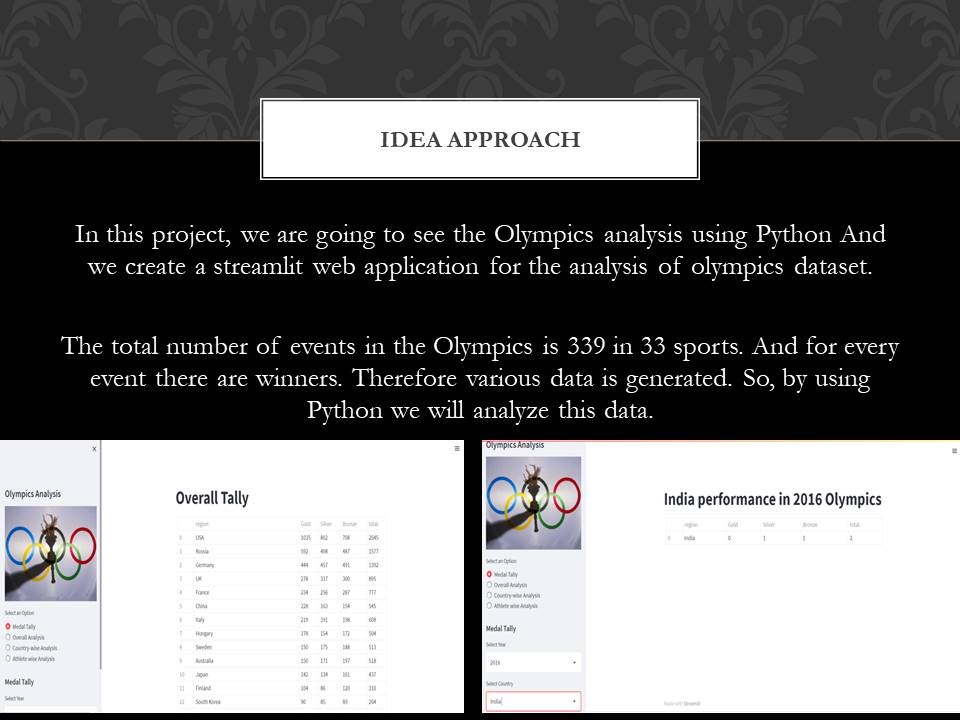
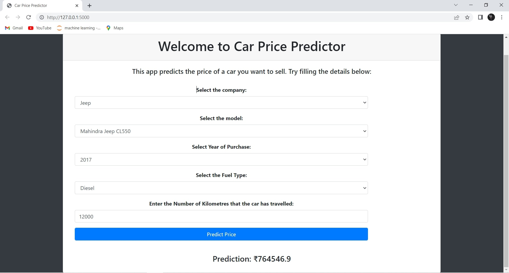
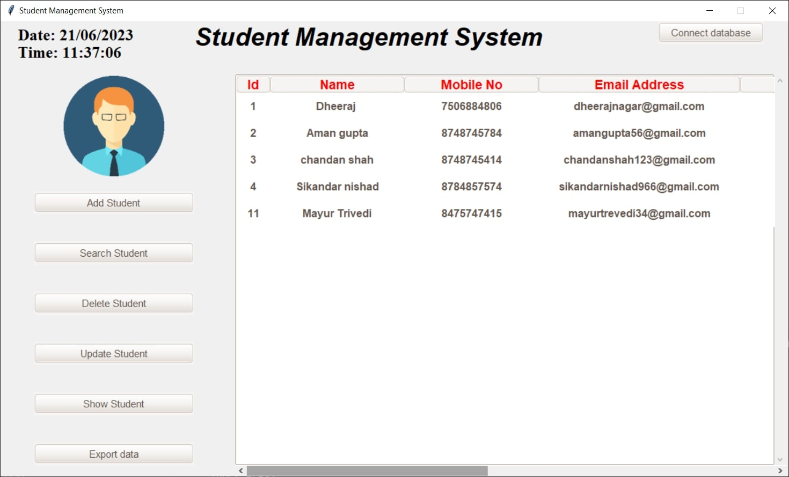

Second Inning Win Prediction
Based on some match stats, we’re predicting who is the winner of an IPL match. Through this project, you will get familiar with the exploratory data analysis and feature engineering techniques that need to be applied to process data.

Laptop Price Prediction
Based on previous stats, we’re predicting the price of laptops. Through this project, you will get familiar with the exploratory data analysis and feature engineering techniques that need to be applied to process data..

Dataset Analysis
Iris classification
Image to Pencil Converter
Decision Tree Classificatio
Market Basket Analysis

Olympics Data Analysis
The total number of events in the Olympics is 339 in 33 sports. And for every event there are winners. Therefore various data is generated. So, by using Python we will analyze this data.
In this project we analysis the previous 120 years datasets and make streamlit webpage to view all analysis in the web page, like from start to the still now how many country are win gold, bronze, silver and and how many country participate and compare man and woman parcitipation

Car Price Prediction
In this Project using Linear Regression model to predict the car price based on like which company, model, year of purchase and how many KM that car can travel. we also convert full-fledged website using the flask framework..

Student Data Management System
We create a Student_Data_Management_System-using python and mysql thats help us to create,delete,update,search and export csv file.
Using Tkinter for gui and backend for mysql to store the data